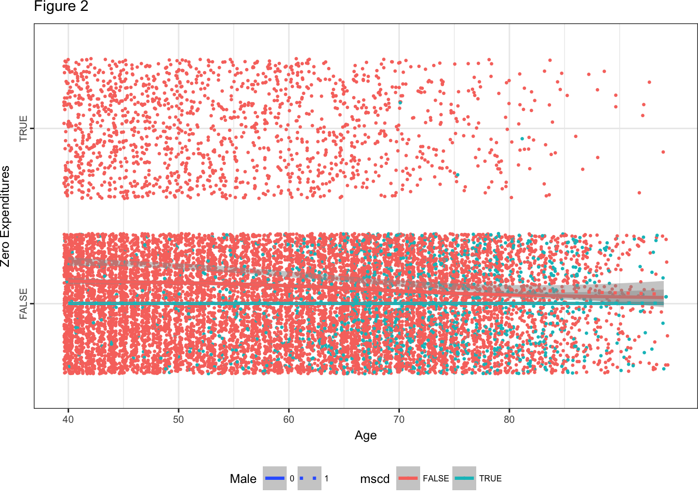

Quick tutorial on ggplot2
ggplot2 has been my most used graphical tool for all of my data analysis projects. So, I thought my first blog post would be a short tutorial on how to use it to create meaningful plots.
ggplot2
ggplot2 is such a powerful R package for visualization. I personally admire the clarity and aesthetic of plots generated by this tool. It was created by Hadley Wickham in 2005 and is one of the best maintained R packages. So let’s get started:
Installation
There are three ways this can be done:
1. By installing whole tidyverse:
install.packages(“tidyverse”)
2. Install just ggplot2: This being the most used.
install.packages(“ggplot2”)
3. Or the development version from GitHub:
install.packages(“devtools”)
devtools::install_github(“tidyverse/ggplot2”)
Usage
In order to start of, you first write ggplot(), then inside supply a dataset; then use aes() which provides aesthetic mappings that describes how variables in the data are mapped to visual properties of geoms. Then, you can start adding layers such as geom_smooth(), geom_jitter(), geom_line(), ggtitle()…. , scales such as scale_linetype_manual (the code below illustrates how this allows us to add an additional element on the legend tab), and faceting specifications (you can have multiple panels based on a variable, split the plot using facets).
Example 1:
Data collected from DAP-2016 was used to predict the association between a typical patient’s emergency department “ED” LOS (length of stay until discharge or hospital admission) and factors that potentially contribute to LOS measured over a one-year period.
For better graphical representation, we make some adjustments to create categorical variables. Therefore, I divided time of day in 3 of the most common hospital workshifts:1 (11:00pm-6:59am), 2 (7am-2:59pm) and 3: (3:00pm-10:59pm). Acuity level: 1 (Weak), 2 & 3(Mild), 4 & 5 (severe) TypeofDay: 1 (Weekend) and 0(Weekdays).
ggplot(emergency.data, aes(x = age, y = los, group = interaction(acuitylevels, typeofday), colour = acuitylevels,
linetype = factor(typeofday))) + geom_smooth(size = 1, alpha = 0.2) + xlab("Age") + ylab("length of stay") +
ggtitle("Figure 1") + scale_linetype_manual("typeofday", values = c(1, 2, 3)) + theme_bw() + theme(axis.text.y = element_text(angle = 90,
hjust = 0.5), plot.margin = rep(unit(0, "null"), 4), legend.position = "bottom", legend.box = "vertical",
text = element_text(size = 9), legend.text = element_text(size = 6)) + scale_x_continuous(breaks = seq(18,
85, 10)) As you can see in the code above, aes() gives us the x and y variables, and I introduced additional variables that will interact, acuity levels has three distinct colors ( red, green and blue) and if you look closely typeofday show us that lines that are dotted represent 1, and lines that are continuous are 0. Patients with acuity levels represented as mild (red), tend to have a higher length of stay during weekdays (continuous line that represent 0: Weekdays).
As you can see in the code above, aes() gives us the x and y variables, and I introduced additional variables that will interact, acuity levels has three distinct colors ( red, green and blue) and if you look closely typeofday show us that lines that are dotted represent 1, and lines that are continuous are 0. Patients with acuity levels represented as mild (red), tend to have a higher length of stay during weekdays (continuous line that represent 0: Weekdays).
geom_smooth : smoothing method (function) to use, eg. lm, glm, gam, loess, rlm. For datasets with n < 1000 default is loess. For datasets with 1000 or more observations defaults to gam. Here the default was gam. In case you have a scatterplot with a lot of noise, seeing dominant pattern can be taxing. In this case adding a smoothed line to the plot with geom_smooth() would be greatly beneficial.
scale_x_continuous() here is giving limits of age range: from 18 to 85 with increments of 10.
Example 2:
Below is a plot that illustrates the fraction of total medical expenditures that are attributable to having a major smoking-caused disease (MSCD) — including lung cancer, laryngeal cancer, COPD, CHD, stroke, and other cancers — for different age, sex and demographic strata. The data comes from the National Medical Expenditure Survey (NMES)
ggplot(dat, aes(x = lastage, y = noexp, group = interaction(mscd, male), colour = mscd, linetype = factor(male))) +
geom_jitter(size = 0.5) + xlab("Age") + ylab("Zero Expenditures") + geom_smooth(size = 1.1, alpha = 0.5) +
ggtitle("Figure 2") +
scale_linetype_manual("Male", values = c(1, 3)) + theme_bw() + theme(axis.text.y = element_text(angle = 90,
hjust = 0.5), plot.margin = rep(unit(0, "null"), 4), legend.position = "bottom", legend.box = "horizontal",
text = element_text(size = 9), legend.text = element_text(size = 6)) + scale_x_continuous(breaks = seq(40,
80, 10))
Lastly, a quick illustration of facet_wrap using the mpg data which is one of the R default data.
data("mtcars")
ggplot(mpg, aes(displ, hwy)) + ggtitle("Figure 3") + geom_point() + facet_wrap(~class, nrow = 4)
I hope you enjoyed this little tutorial about ggplot2!